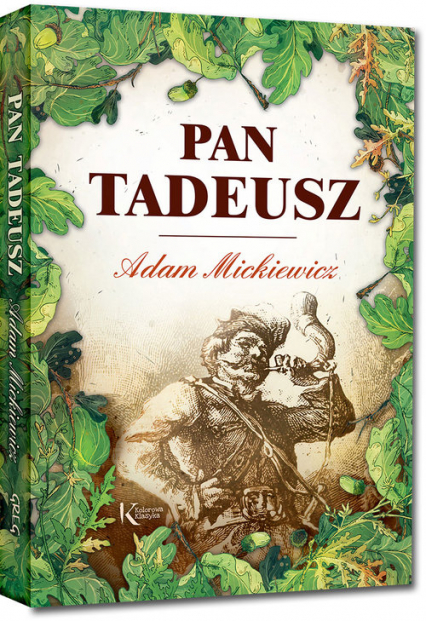

|  |
|
| description
Do rodzinnego domu przyjeżdża ze szkół w Wilnie na wakacje młody Tadeusz. Okazuje się, że Soplicowo, majątek jego opiekuna Sędziego Soplicy, jest pełne gości, którzy zjechali tu, aby uczestniczyć w procesie o stary zamek, niegdyś własność bogatego magnata Stolnika Horeszki. Proces toczy się między ostatnim krewnym Horeszki, Hrabią i Sędzią Soplicą. Wieczorem Tadeusz bierze udział w uczcie, na której uwodzi go ciotka Telimena. Tadeusz myśli, że to ona jest śliczną dziewczyną, którą zaskoczył rankiem (Zosia mieszkała w pokoju Tadeusza w czasie jego nieobecności w dworku). O wdzięki Zosi stara się także nieco starszy od Tadeusza hrabia z rodu Horeszków. Następnego dnia okazuje się, że niedźwiedź opuścił matecznik i można na niego zapolować - wszystkich pochłaniają przygotowania do łowów na króla puszczy. Polowanie rozpoczyna się wczesnym rankiem. Nieco później w karczmie Jankiela pojawia się ksiądz Robak, który namawia okoliczną szlachtę, by zatroszczyła się o przygotowanie Litwy na przyjęcie wojsk Napoleona, który już się zbliża. Myśliwi odnoszą sukces - niedźwiedź zostaje zabity. Wieczorem podczas kolejnej uczty wybucha spór między Soplicą a Hrabią. Zamiast ogólnie spodziewanej zgody, Hrabia zrywa porozumienie i postanawia przedłużyć proces i starać się o odzyskanie zrujnowanego zamku. Agitacyjne działania Robaka wykorzystuje wierny sługa Horeszków - Gerwazy - który namawia zaścianek Dobrzyńskich do zajazdu na Soplicowo. Jeszcze tego samego dnia wieczorem Dobrzyńscy napadają na Soplicowo. Już rankiem okazuje się jednak, że to nie oni zwyciężyli w walce. Ktoś zawiadomił o bitwie stacjonujących w okolicy Rosjan, którzy pojmali szlachtę z Dobrzyna i rozpanoszyli się w Soplicowie. Na ratunek pospieszył Robak z przywódcą rodu Dobrzyńskich, Maćkiem nad Maćkami. Udało im się wyzwolić Dobrzyńskich a następnie pokonano Rosjan. Jeszcze tego samego wieczora po odbyciu spowiedzi i wyznaniu swoich win zmarł zraniony kulą w czasie bitwy z Rosjanami ksiądz Robak, który okazał się być Jackiem Soplicą. Tymczasem młodzi żołnierze musieli uchodzić z majątku, bo groziło im aresztowanie. Byli wśród nich Tadeusz i Hrabia, którzy wyruszyli walczyć w Legionach Polskich. Po upływie roku ponownie pojawili się w dworku, tym razem jako legioniści, bohaterowie. W Soplicowie wydano ucztę na cześć polskich generałów służących pod dowództwem Napoleona. Odbyły się także zaręczyny Tadeusza i Zosi. Jacek Soplica został oficjalnie zrehabilitowany (miał na Litwie opinię zdrajcy narodowego, ponieważ z jego ręki zginął Stolnik Horeszko, zwolennik Konstytucji 3 maja). |
|